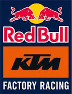

KTM Red Bull Factory Racing
Who is the Owner of this team ?
The team is owned by KTM AG, an Austrian motorcycle manufacturer, with significant support and sponsorship from Red Bull. The management structure varies by racing discipline, with figures like Pit Beirer, KTM Motorsports Director, overseeing the overall racing operations.
Origin of the team
The team's roots trace back to KTM's long history in motorsports, particularly in motocross. In the premier road racing category, MotoGP, the Red Bull KTM Factory Racing team was officially formed and made its debut in the 2017 season with the newly developed KTM RC16.
Achievemet of the team
Red Bull KTM Factory Racing has quickly established itself as a serious contender in MotoGP, securing race wins and podiums. They also have a remarkable record in other categories, especially in motocross. Key achievements include their first-ever MotoGP victory in 2020 and multiple titles in the Moto3 and Moto2 classes.
Formed in which year
While KTM's history in racing is much older, the Red Bull KTM Factory Racing team, specifically in the MotoGP class, was officially formed in 2017.
Years with major wins
: The team's first major MotoGP victory came in 2020 at the Czech Grand Prix. They have since continued to secure race wins in subsequent seasons, consistently improving their performance and challenging for podiums.
The famous riders of team